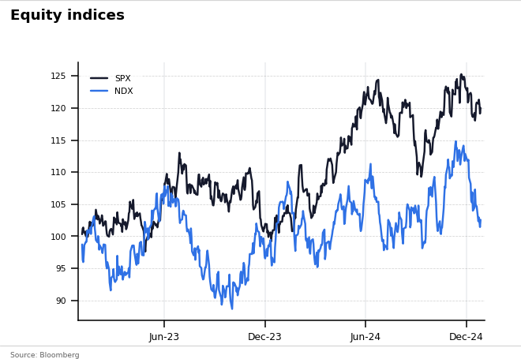

Export, reuse and chaining¶
Once a chart is built you can display it, get the Matplotlib Figure, save a PNG file or keep the image in memory (a BytesIO buffer) to insert it later in a PowerPoint, a Word report or a TableSheet.
import numpy as np
import pandas as pd
import helpers_ps as hp
hp.set_graph_theme()
rng = np.random.default_rng(42)
dates = pd.bdate_range("2023-01-02", periods=520)
rets = rng.normal([0.0004, 0.0006, 0.0002], [0.009, 0.013, 0.004], size=(len(dates), 3))
prices = pd.DataFrame(
100 * np.exp(rets.cumsum(axis=0)),
index=dates,
columns=["SPX", "NDX", "AGG"],
)
def build():
return (
hp.GraphMtplt(prices)
.graph_line(series=[{"ticker": "SPX"}])
.add_title("S&P 500")
)
Overview¶
| Method | Returns | Use it for |
|---|---|---|
show() |
matplotlib.figure.Figure |
Display in a notebook or get the figure for further Matplotlib work. The chart stays editable. |
save() |
io.BytesIO (or None if dir is given) |
In-memory PNG, ready for PowerPoint / Word / other libraries. Closes the figure. |
render(name, dir) |
None |
Write <dir>/<name>.png to disk. Closes the figure. |
render_from_dict(images) |
None |
Display and save a whole dictionary of buffers (from helpers_ps.MtpltGraph import render_from_dict). |
show()¶
Returns the figure. In a notebook the figure is displayed automatically; in a script you decide what to do with it:
show() raises RuntimeError("Plot must exist") if no chart has been created.
save(): PNG in memory¶
save() renders the figure into a BytesIO object (PNG, dpi=400 by default), closes it and resets the internal state, so the same GraphMtplt object can be reused for another chart.
Collect many charts in a dictionary¶
Pass a dictionary with dir= and a name; the buffer is stored as dir[name] and the method returns None. This is the standard way to prepare all the charts of a report:
images = {}
build().save(dir=images, name="spx")
(
hp.GraphMtplt(prices)
.graph_line(series=[{"ticker": "AGG"}])
.add_title("Aggregate bond")
.save(dir=images, name="agg")
)
list(images)
The module also provides a shared registry, helpers_ps.MtpltGraph.config.buffers, that you can use as dir=buffers when several notebooks / functions need to share images:
Reading the buffer¶
from PIL import Image
image = Image.open(buffer) # buffer.seek(0) if it was already read
with open("chart.png", "wb") as file:
file.write(buffer.getvalue())
render(): PNG on disk¶
render(name, dir, dpi=400) writes <dir>/<name>.png. The folder must exist.
import os
os.makedirs("charts", exist_ok=True)
build().render(name="spx", dir="charts", dpi=300)
os.listdir("charts")
render_from_dict(): preview and save a dictionary of buffers¶
Displays every buffer of a dictionary with Matplotlib and writes them to output_dir (created if missing):
from helpers_ps.MtpltGraph import render_from_dict
render_from_dict(images, output_dir="saved_plots", figsize=(6, 4))
Figure size and resolution¶
The figure size is set when the canvas is created, with plot(figsize=(width, height)) in inches (default (6.0, 4.8)). dpi in save() / render() controls the pixel resolution of the export:
| Target | Suggestion |
|---|---|
| Slide with one chart | plot(figsize=(6, 4.8)), dpi=400 (default) |
| Wide chart | plot(figsize=(10, 4)) |
| Quick preview | dpi=100 |
Fixed-size canvas + a different layout
Titles, subtitles and the source are placed with figure coordinates (x=0.02, y=0.93...), so they keep their position when you change figsize. Fine-tune with subplot_adjust(left=..., right=..., top=..., bottom=...) (see Plotting).
Chaining helpers: pipe() and tap()¶
Both receive the graph object as first argument, which lets you package a style or a debug step in a reusable function without breaking the chain.
| Method | The function returns... | The chain continues with... |
|---|---|---|
pipe(func, *args, **kwargs) |
a graph object, or None |
the returned object (or the same graph if None) |
tap(func, *args, **kwargs) |
ignored | always the same graph |
def corporate_style(graph, title):
"""Reusable block: title, source and guides in one call."""
return (
graph
.add_title(title)
.add_source("Source: Bloomberg")
.horizontal_guides(mostrar_cero=False)
.config_yaxis(fmt=",.0f")
)
g = (
hp.GraphMtplt(prices)
.graph_line(series=[{"ticker": "SPX"}, {"ticker": "NDX"}])
.pipe(corporate_style, title="Equity indices")
.tap(lambda graph: print("series drawn:", [t[0] for t in graph._ticker_label_color]))
.add_legend()
)

tap() is also the way to call methods that do not return the graph, such as add_recessions().
Using the chart in other modules¶
| Destination | How |
|---|---|
| PowerPoint | Save to a buffer and insert with python-pptx: slide.shapes.add_picture(buffer, left, top, width). For native (editable) charts use the Ppt module instead. |
Table sheet (TableSheet) |
sheet.add_image(g, name="curve") accepts the GraphMtplt object directly. See DfStyling: charts in a sheet. |
| Excel | Save to a file with render() and use openpyxl / xlsxwriter to insert the picture. |